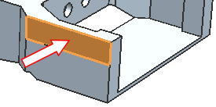
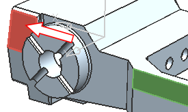
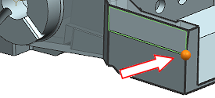
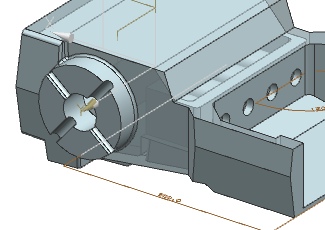
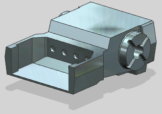

Make faces parallel
Make the four faces you just created parallel to the angled faces at the other end of the part.
-
For Motion Face, select the face shown.

-
For Stationary Face, select the face shown.

-
Make sure the Symmetric
 check box is selected.
check box is selected.
-
For Through Point, select the point shown.

-
Use the same method to make the bottom faces parallel to the corresponding angled faces at the other end of the part.


-
Close all parts.